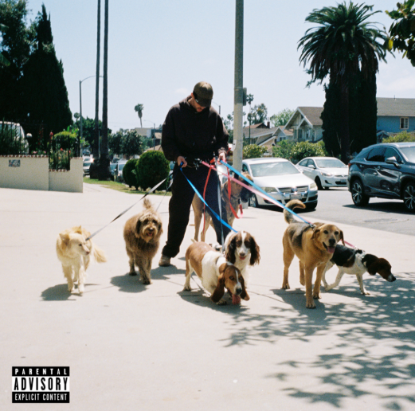

Top Canciones de Bad Bunny

Tití Me Preguntó
Un clásico del álbum *Un Verano Sin Ti*, mezcla de ritmos latinos y trap que se vuelve viral.

Yonaguni
Una canción melancólica donde Bad Bunny canta en japonés, mostrando su lado emocional.

Me Porto Bonito
Colaboración con Chencho Corleone que arrasó en TikTok y en las listas de éxitos.
Callaíta
Una de las canciones más emblemáticas de Bad Bunny, perfecta para cualquier fiesta.

La Canción
Junto a J Balvin, mezcla de reggaetón suave con letras nostálgicas. Pura vibra.
Dakiti
Una fusión futurista con Jhay Cortez que dominó las listas internacionales en 2021.

Tu No Vive Asi
"Tú no vive así" es una canción y videoclip del artista puertorriqueño Bad Bunny, que ha alcanzado gran popularidad y ha sido vista millones de veces en YouTube.
Diles
"Diles", que es uno de sus primeros temas virales y donde colaboró con artistas como Ozuna, Arcángel, Farruko y engo Flow. Salió cuando Bad Bunny estaba empezando a hacerse notar en la escena del trap latino.